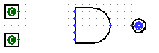
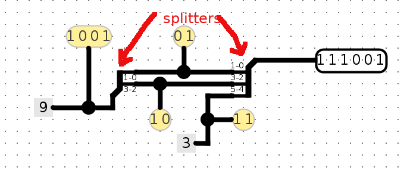
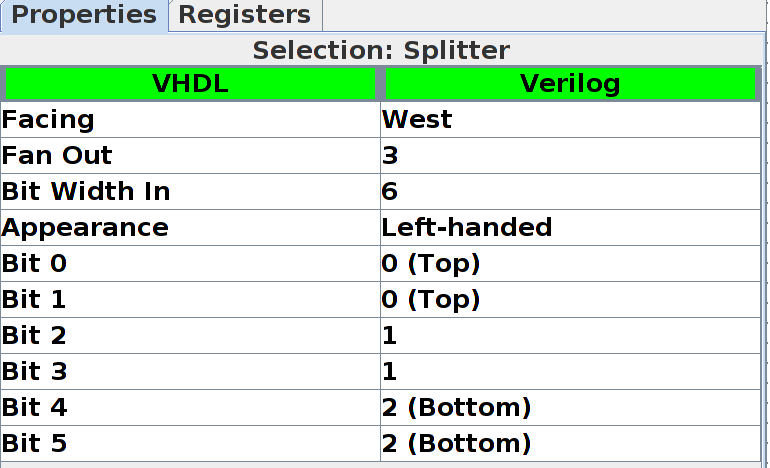

Lab-5: Introduction to Logism
Setup
Unlike the previous labs which are done on snappy1, you can do this lab on your local Mac or Windows laptop. Follow the following 3 setup steps to download the required files.
Step-1: Clone your Lab 5 repository
- First, make your github repository by clicking the Github classroom invitation link (found on campuswire).
- Second, clone your github repository on your laptop
$ git clone git@github.com:nyu-cso-fa22/lab5-<YourGithubUsername>.git lab5
If your local laptop does not have git already installed, follow the instructions here to install git.
Step-2: If your laptop does not have java already installed, you need to install Java runtime. Follow the instructions here.
Step-3: Launch Logism Evolution. On Windows, you can directly click the logisim-evolution-2.15.jar file in your local lab5 repository. On Mac, open a terminal, navigate to your lab5 repository directory which contains the logisim-evolution-2.15.jar file, and type the command:
java -jar logisim-evolution-2.15.jar.
You will see the Logisim's GUI interface pop up.
Warning: Save often with Logism
Logisim does not have autosave, i.e. it does not save your work as you go along. It also does not automatically create a new .circ file when you open it! Save when you start, and save frequently as you work.Warm-up on the basics
We begin by creating a very simple circuit just to get the feel for placing gates and wires. Before you start, take note of a useful feature: the zoom function! It's in the bottom left corner, and will make your life with Logisim much easier.
- Start by clicking the "AND gate" button (located on the toolbox bar immediately below the menu bar). This will cause the shadow of an AND gate to follow your cursor around. Click once within the main schematic window to place an AND gate.
 Click the "Input Pin" button.
Now, place two input pins somewhere to the left of your AND gate.
Click the "Input Pin" button.
Now, place two input pins somewhere to the left of your AND gate. Click the "Output Pin" button.
Then place an output pin somewhere to the right of your AND gate. Your
schematic should look something like this at this point:
Click the "Output Pin" button.
Then place an output pin somewhere to the right of your AND gate. Your
schematic should look something like this at this point:
 - Click the "Select tool"
button. Click and drag to connect the input pins to the left side of the AND
gate. This will take several steps, as you can only draw vertical and
horizontal wires. Just draw a wire horizontally, release the mouse button,
then click and drag down starting from the end of the wire to continue
vertically. You can attach the wire to any pin on the AND gate on the left
side. Repeat the same procedure to connect the output (right side) of the
And Gate to the LED. After completing these steps your schematic should look
roughly like this:

You can also change the number of inputs of the "AND gate" by clicking it using the select tool and changing the properties in the bottom left segment of the window. This can also be done before you put down the component.
 Finally, click the "Poke" tool
and try clicking on the input pins in your schematic. Observe what happens.
Does this match with what you think an AND Gate should do?
Finally, click the "Poke" tool
and try clicking on the input pins in your schematic. Observe what happens.
Does this match with what you think an AND Gate should do?
Part 1: Sub-Circuits
Just as C programs can contain helper functions, a schematic can contain subcircuits. In this part of the lab, we will create several subcircuits to demonstrate their use.
Subcircuit naming:
Logisim Evolution won't let you name a subcircuit after a keyword (e.g. "NAND", "NOR"). Additionally, circuit names must start with "A-Za-z", so no starting with numbers.Warm-up:
- Create a new schematic (File->New) for your work.
- Create a new subcircuit (Project->Add Circuit ). You will be prompted for a name for the subcircuit; call it AND1 (note the 1 at the end. As there is already a component called AND, you cannot call it AND).
- In the new schematic window that you see create a simple AND circuit with 4 input pins on the left side and an output pin on the right side. Do this by using only the built-in AND gate with 2 inputs only. You can change the labels for the inputs and output by selecting the input/output using the select tool and changing the property "Label" in the bottom left of the window.
- Go back to your "main" schematic by double-clicking "main" in the circuit selector at the left of the screen. Your original (blank) schematic will now be displayed, but your AND1 circuit has been stored.
- Now, single click the word "AND1" in the list. This will tell Logisim that you wish to add your "AND1" circuit into your "main" circuit.
- Try placing your AND1 circuit into the "main" schematic. If you did it correctly, you should see a gate with 4 input pins on the left and one output pin on the right. Try hooking input pins and output pins up to these and see if it works as you expect.
Part 1 exercise:
Now, you are ready to complete the exercises for part1.
Open the given schematic file called part1.circ (File->Open..)
At the left of the screen, you'll see a set of existing subcircuits that have already been created for you. Please complete these subcircuits using only AND, OR, and NOT gates and not the built-in NAND, NOR, XOR, Decoder, Multiplexer circuits. The subcircuits you are asked to implement are:
- NAND1: a NAND gate
- NOR1: a NOR gate
- XOR1: a XOR gate
- NegSign: Negate the most significant bit (sign bit) of an 8-bit number. You can think of the 8-bit number as representing a signed integer in the "sign and magnitude" format (instead of 2's complement), thus this circuit negates the number.
- Mux2to1: a 2-to-1 multiplexer
- Dec2to4: a 2-to-4 decoder
- Mux4to1: a 4-to-1 multiplexer. Hint: you may want to use the Dec2to4 subcuirt
In order to faciliate testing of your subcircuits, we have fixed the locations of your subcircuits' input and output pins, using the Logisim functionality Tunnel (read more about here). To give you an idea of how to access the input and output signals, the image below shows an example (incorrect) implementation of the NAND1 subcircuit.
Like the above example shows, all the gates and wires in your implementation should be below the line marked "Put your circuits below this line". On top of the line, the input and output pins are connected to labelled tunnels. Underneath the line, your implementation can access the inputs using the corresponding labelled tunnels and also pass its output to the corresponding labelled tunnel(s), as shown in this example.
When implementing NegSign and Dec2to4, you will also need to use Logisim functionality Splitter. Read about Tunnel and Splitter in the Logisim must-learn feature section.
Testing Part1
On Mac OS, test your part1 circuits by typing the following into a terminal, after navigating into your lab5 repository directory. The following output shows a run of successful test:
If you use a Windows laptop, you will have to run the test on snappy1. To do so, follow the following 3 steps:
- First, on your windows laptop, push your local changes to github using
git commit -am "..."; git push origin
- Second, on snappy1, clone your lab5 directory (if you have not done so).
git clone git@github.com:nyu-cso-fa22/lab5-<YourGithubUsername>.git
Pull the changes into into this repository.git pull
- Third, on snappy1, navigate to the lab5 repository, and type
./test.sh part1
.
Part 2: FSMs to digital logic
Warm-up: AddMachine
Let's implement a circuit that increments a value ad infinitum. The difference between this circuit and the circuits you've built in part1 is that you need some registers. The following will show you how to add registers to your circuit.
- Do the warm-up in a new schematic file (File->New)
- Create a new subcircuit (Project->Add Circuit). Name this new subcircuit, AddMachine.
- Load in the Arithmetic Library if it is not already loaded (go to Project->Load
Library->Built in Library and select "Arithmetic"). This library contains elements
that will perform basic mathematical operations. When you load the library, the circuit
browser at left will have a new "Arithmetic" folder.

- Select the adder subcircuit from the "Arithmetic" library and place the adder into your AddMachine subcircuit.
- Load in the Memory Library if it is not already loaded (go to Project->Load Library->Built in Library and select "Memory"). This library contains memory elements used to keep state in a circuit. A new "Memory" folder will appear in the circuit browser.
- Select the register from the "Memory" folder and place one register into your
subcircuit. Below is an image diagraming the parts of a register.

- Connect a clock to your register. You can find the clock circuit element in the "Wiring" folder in the circuit browser.
-
Connect the output of the adder to the input of the register and the output of the register to the input of the adder.
You may get a "Incompatible widths" error when you try to connect components. This means that your wire is trying to connect two pins together with different bit widths. If you click on the adder with the "Selection" tool, you will notice that there is a "Data Bit Width" property in the bottom left field of the window. This value determines the number of bits each input and output the adder has. Change this field to 8 and the "Incompatible widths" error should be resolved.
-
Wire an 8-bit constant 1 to the second input of the adder. You can find the "constant" circuit element in the "Wiring" library.
-
Add two output pins to your circuit so that you may monitor what comes out of the adder and the register. Make sure the output is 8 bits. Thus, by the end, your circuit should look like as follows:

Now let's see if you built your circuit correctly.
- Go back to the "main" subcircuit by double clicking on "main" in the circuit browser.
- Single click on your "AddMachine" circuit to select it.
- Change the "Facing" property to another direction. Any circuit with the "Facing" property can be rotated to accomodate wires as you need them. This will definitely be useful when you do your project.
- Place your AddMachine subcircuit into the main subcircuit.
- Select the AddMachine subcircuit you just placed into main.
- Connect output pins to the AddMachine subcircuit. Output pins are ordered top to bottom, left to right. Thus, if you followed the schematic above, then the top pin on the right side outputs the value of the adder, and the bottom pin is the output of the register.
-
Right click on your AddMachine subcircuit, and select "View AddMachine. This is the ONLY method to preserve state (i.e. keep register values at its current value). Double-clicking on the circuit at the circuit browser at left makes logisim think you want to edit the circuit instead of just checking what state the circuit has.
Note: You can use Simulate->Go In To State->*Circuit Name*, but that allows you go into the first circuit of that type. If you placed two Fib8 circuits down, it only takes you to the first Fib8 circuit you put down.
- Initialize the register value to 1. You can do this by first, clicking on the register value with the poke tool. Then, type the hex value in.
- To return to the main circuit while preserving state, go to Simulate->Go Out To State->main. Alternatively, you can hold the Command key (control on windows) and press Up-Arrow.
- Now start running your circuit by going to Simulate->Ticks Enabled (or Command/Control + K). Your circuit should now be outputting a counter in binary form.
- If you want to run your circuit faster, you can change the tick frequency in Simulate->Tick Frequency.
Part 2 exercise
Now you are ready to do something really cool; translate a FSM (Finite State Machine) into a digital logic circuit.
A FSM keeps track of inputs given, moves between states based on these inputs, and outputs something everytime something is input.
In particular, the AddMachine we just built for the warm-up looks eerily similar to the diagram of a general FSM circuit. The skeleton file we give you contains a similar circuit. Modify this circuit to implement the following FSM:
If two ones in a row or two zeroes in a row have ever been seen, output zeros forever. Otherwise, output a one.
-
Note that the FSM is implemented by the following diagram:

-
Observe that the following is a truth table for the FSM:
st1 st0 input | next st1 next st0 output 0 0 0 | 0 1 1 0 0 1 | 1 0 1 0 1 0 | 1 1 0 0 1 1 | 1 0 1 1 0 0 | 0 1 1 1 0 1 | 1 1 0 1 1 0 | 1 1 0 1 1 1 | 1 1 0 -
We've provided you with a starter Logisim circuit to start out in FSM.circ
-
Note that the top level of the circuit looks almost exactly the same as our previous adder circuit, but now there's a FSMLogic block instead of an adder block. FSMLogic is the combinational logic block for this FSM. We have handled the output bit for you, as it's the most complicated to simplify and implement. You should complete the circuit by completing the StateBitOne and StateBitZero subcircuits, which produces the next state bits.
You could go from the truth table to SOP to a circuit, or you could notice that for each state bit, there are only two situations in which it is zero. This could make your life easier if you think a bit outside the box...
Testing FSM
Test your FSM circuits as follows (the output shows a run of successful test):
$./test.sh FSM Copy FSM.circ to tests/ Checking FSM...OK
Bonus exercise: Logical Shift Right
As a bonus, you are to implement a non-trivial combinational logic block:shr, which is the logical right shift operation. shr A, B will shift the bit pattern of input A to the right by B bits, filling 0-bits from the left. In C, this amounts to calculating R = A >> B
We have provided you with a starter Logisim circuit file called shr.circ. Implement your logical right shift operator in the shr subcircuit. Play with and test your shr subcircuit in the TestMain subcircuit.
Your shr subcircuit has the following inputs:
- A, 8 bits, the input to be shifted
- B, 3 bits, the shift amount
You are NOT allowed to use Logisim shifters in your solution, though all other combinational logic (MUXes, constants, gates, adders, etc.) is allowed. Logisim's built-in MUXes (find them under the Plexers menu) might be especialy helpful. Your solution shouldn't involve a clock or any clocked elements, like registers.
Hint: Just because we gave you an RTL representation doesn't mean it's the best way to look at this problem. Think about the input bits of B and think about how to effectively use splitters! Can you do something with the binary form? Remember why binary is good for use in computers: a 1 is easy to represent as an "ON" signal, and a 0 is easy to represent as an "OFF" signal. Let's say we want to rotate 6 times. 6 is 110 in binary, or 1*0x4 + 1*0x2 + 0*0x1. Can you use this to make a cleaner circuit?
Testing shr
Test your shr circuits as follows (the output shows a run of successful test):
$./test.sh shr Copy shr.circ to tests/ Checking shr... OK
Must-learn Logisim features
Splitters
Splitters allow you to take a multi-bit value and split it up into smaller parts, or (despite the name) combine multiple values that are one or more bits into a single value. For example, we split the 4-bit binary number "1001" into "10" and "01", then recombine it with "11" into the final 6-bit number "111001":
Click on a splitter to get its menu in the sidebar. You can use this menu to determine the number of arms on your splitter and how many bits should go on each arm. For the circuit above, the left splitter's menu looks like this:

While the right splitter's menu looks like this:
Notice that there's an option called "facing". You can use this to rotate your splitter. Above, see that the splitter on the right is facing West while the splitter on the left is facing East.
If you see an error wire that is orange, this means that your bit width in does not match your bit width out. Make sure that if you're connecting two components with a wire, you correctly set the bit width in that component's menu.